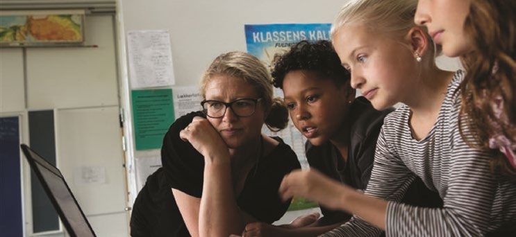
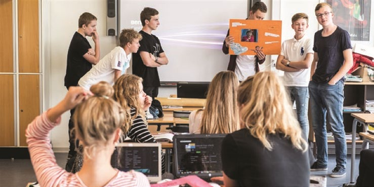

Fakta-ark 1: Skole
Áudio
sidde 05
Fakta-ark 1: Skole
Læremateriale Til Medborgerskabsprøven

sidde 06
Der er undervisningspligt i Danmark. Alle børn skal have mindst ti års undervis ning. De fleste forældre vælger at sætte deres barn i folkeskolen.
Læremateriale Til Medborgerskabsprøven Fakta-Ark 1: Skole
Forældrene kan dog også vælge, at barnet skal modtage undervisning andre steder end i folkeskolen. De kan fx vælge at sætte barnet i en friskole eller i en privatskole. Her skal forældrene betale direkte til skolen for barnets skolegang. Det skal de ikke, hvis barnet går i folkeskolen. Det er et krav*, at børn på friskoler og privatskoler skal lære det samme som børn i folkeskolen.
Dette fakta-ark handler om: • Folkeskolen • Forældresamarbejde • Frie grundskoler
Folkeskolen
De fleste børn i Danmark begynder deres skolegang i folkeskolen. Folkeskolen er gratis for alle børn og varer 10 år. Børnene starter i børnehaveklassen, når de er omkring seks år gamle. Her begynder børnene at lære bogstaver og tal.
Efter børnehaveklassen følger 1. – 9. klasse. Undervisningen i folkeskolen skal sikre, at børnene lærer nok til at kunne fortsætte på en ungdomsuddannelse. Der undervises i bl.a. dansk, engelsk, tysk, fransk, matematik, fysik, kemi, historie, samfundsfag, kristendomskundskab, musik, idræt (sport) og madkundskab (madlavning).
Et andet vigtigt formål med undervisningen i folkeskolen er at sikre, at børnene lærer at tænke kritisk og selvstændigt og dermed forberedes til at være borgere i et demokratisk samfund. Børnene lærer derfor at give udtryk for deres mening. Børnene kan også lave elevråd og på den måde få indflydelse*, når der skal tages beslutninger på skolen.
sidde 07
Endelig spiller det sociale element en vigtig rolle i folkeskolen. Børnene lærer at arbejde sammen i grupper og at løse problemer gennem samarbejde. Det er også ofte en del af skolegangen, at eleverne sammen med lærerne deltager i fælles udflugter og lejrskoler.
Læremateriale Til Medborgerskabsprøven Fakta-Ark 1: Skole
En folkeskole har som regel tre trin: Indskolingen, som går fra børnehaveklassen til 3. klasse. Mellemtrinnet, som går fra 4. til 6. klasse. Udskolingen, som går fra 7. til 9. klasse. Efter 9. klasse kan man vælge at fortsætte i 10. klasse, inden man går videre i uddannelsessystemet, eller direkte ud på arbejdsmarkedet.
10. klasse er frivillig, men cirka halvdelen af alle elever tilmelder sig 10. klasse. Nogle elever tager 10. klasse på deres egen skole, hvis den har en 10. klasse. Andre vælger at tage 10. klasse på en efterskole eller fri fagskole, hvor man bor og går i skole med andre unge. Rammerne* for folkeskolen er fastlagt i folke skoleloven. I den står der bl.a., hvad formålet med folkeskolen er, hvad der skal undervises i, og hvor mange timer eleverne skal have.
Formålet med folkeskolen er, at den i samarbejde med forældrene skal give eleverne viden og færdigheder, der
- Forbereder dem til at uddanne sig videre og giver dem lyst til at lære mere
- Gør dem fortrolige* med dansk kultur og historie
- Giver dem forståelse for andre lande og kulturer
- Hjælper dem til at forstå, hvordan mennesket og naturen påvirker* hinanden.
Desuden har folkeskolen som formål, at hver enkelt elev udvikler sig alsidigt. Det betyder blandt andet, at eleven ikke kun skal have boglig viden, men også skal udvikle sig personligt og socialt.
Folkeskolen skal også lære børnene at samarbejde. Undervisningen er derfor ind imellem tilrettelagt sådan, at eleverne lærer at arbejde sammen i grupper og at løse problemer gennem samarbejde. Der kan også indgå* udflugter og lejrskoler sammen med lærerne i undervisningen. Her skal børnene lære nye måder at samarbejde og være sammen med hinanden på.
Eleverne skal også lære at tænke kritisk og selvstændigt. De skal lære at argu mentere for deres meninger. Man arbejder derfor i de fleste fag med en form for undervisning, der sikrer, at eleverne kan diskutere det faglige stof, de lærer, og forstå det i forhold til deres hverdag.
Folkeskolen skal forberede eleverne til at have medansvar, rettigheder og pligter i et samfund med frihed og folkestyre*. Skolen skal derfor være præget* af åndsfrihed*, ligeværd* og demokrati. Det er ofte i fagene historie, dansk og samfundsfag, at eleverne undervises i dette.
Ved hver skole, som har fem eller højere klassetrin, har eleverne ret til at danne et elevråd. Et elevråd består af mindst en elev fra hver klasse. Elevrådet er først og fremmest med til at bestemme sager, der har med elevernes egen skoledag at gøre som fx mad i kantinen. Skolen kan også spørge elevrådet, hvad det mener
sidde 08
om større beslutninger på skolen. Mindst to repræsentanter fra eleverne sidder også med i skolebestyrelsen*.
Læremateriale Til Medborgerskabsprøven Fakta-Ark 1: Skole
Der er fastsat fælles mål for, hvad eleverne skal lære i alle fag, og undervisningen planlægges med henblik på, at eleverne kan nå målene. Lærerne arbejder ofte sammen i team, dvs. de arbejder sammen i grupper. Et team kan fx arbejde sammen om, hvordan undervisningen i nogle bestemte klasser skal være, eller hvordan man løser problemer i undervisningen.
Eleverne er normalt inddelt i klasser, og hver klasse har en eller flere klasselæ rere, som er ansvarlige for kontakt med elever, forældre, klassens andre lærere og skolens ledelse. På nogle skoler skifter man klasselærer, når man kommer op på mellemtrinnet og igen i udskolingen. Eleverne har dog ofte de samme klassekammerater gennem hele deres skoletid.
Hver elev fra børnehaveklassen til og med 9. klassetrin har også en meddelel ses-bog, som er lærerens vurdering af, hvordan eleven klarer sig fagligt i et fag. Klasselæreren kan også vurdere, hvordan eleven klarer sig socialt, dvs., hvordan eleven fungerer sammen med de andre elever og med lærerne. I meddelelses bogen beskriver læreren også, hvad eleven skal have fokus på i det kommende år.
Hvis en elev har brug for støtte i mindst ni undervisningstimer om ugen, skal eleven have tilbudt specialundervisning, hvor eleven fx bliver undervist sammen med andre elever, som måske har brug for at blive undervist på en anden måde, end den der bruges i klassen. Specialundervisningen skal være tilrettelagt, sådan at eleverne kommer igennem de samme fag og emner som deres klasser. Elever skal som udgangspunkt undervises i en almindelig klasse og kan kun komme i en specialklasse, hvis de har et særligt behov for det.
Fra 0. klasse (børnehaveklassen) til 7. klasse får børnene ikke karakterer i folkeskolen. Men fra folkeskolens 8. klasse får eleverne karakterer i en række fag mindst to gange om året. Skolen kan i nogle tilfælde give eleverne stand punktskarakterer i 6. og 7. klasse sammen med anden feedback. Efter 9. klasse aflægger eleverne prøve i mange fag. Efter 10. klasse kan eleverne også aflægge prøve i flere fag. Prøverne kan være både mundtlige og skriftlige.
Eleverne får karakterer. Den karakterskala, der anvendes i Danmark, hedder 7-trins-skalaen. Den højeste karakter er 12, og den laveste karakter er -3. 7-trins-skalaen bruges overalt i det danske uddannelsessystem.
Skole-Hjem-Samarbejde
Samarbejdet mellem skolen og hjemmet er en vigtig del af arbejdet i folkeskolen. Målet med samarbejdet er at støtte elevens læring og trivsel. Undersøgelser af læring viser, at elever lærer bedre, når de hjemme taler om, hvad de lærer i skolen, og når skolen sørger for, at forældrene ved, hvad der foregår i skolen.
sidde 09
Skole-Hjem-Samtaler
Læremateriale Til Medborgerskabsprøven Fakta-Ark 1: Skole
På de fleste skoler inviteres forældrene mindst én gang om året til en samtale med barnets lærere. Det hedder skole-hjem-samtaler.
I de ældste klasser er eleverne som regel med til samtalen. Til skole-hjemsamtalen snakker barnets lærer eller lærere med forældrene og evt. barnet om
- Hvordan barnet har det socialt i klassen
- Hvordan barnets faglige niveau er
- Meddelelsesbogen og hvad der skal være fokus på i de næste måneder
- Hvordan forældrene evt. kan hjælpe, hvis der er problemer
En skole-hjem-samtale varer som regel omkring 15 minutter.
På nogle skoler har man ansat en skole-hjem-vejleder, som fx kan være en lærer eller en pædagog. Skole-hjem-vejlederens opgave er at styrke* dialog og samarbejde mellem skolen og hjemmet for at styrke eleverne fagligt og socialt.
Forældremøder Og Klasseråd
Forældremøder i klassen holdes på de fleste skoler en til to gange om året. Lærerne kan fx fortælle om, hvordan de har planlagt skoleåret og om, hvordan der arbejdes i klassen. På forældremøderne kan forældrene også diskutere, hvilke regler de ønsker skal gælde i klassen, fx omkring fødselsdage, madpakker eller trivsel* i klassen.
På forældremøder kan man også vælge kontaktforældre eller et klasseråd. Et klasseråd har flere opgaver. Det kan arrangere klassefester eller lejrskoler; det kan tage sig af sociale problemer i klassen, hvis der er børn, som bliver drillet; eller det kan sørge for, at fx kritik af forhold på skolen kommer videre til skole bestyrelsen.
Skolebestyrelser
På alle folkeskoler skal der være en skolebestyrelse. En skolebestyrelse består af repræsentanter for forældrene, personalet og eleverne, og evt. op til to repræsentanter fra det lokale erhvervsliv, lokale ungdomsuddannelsesinstitu tioner eller lokale foreninger. Forældrene udgør flertallet i skolebestyrelsen. Skolebestyrelsen fastsætter blandt andet, hvordan forældresamarbejdet skal foregå. Skolebestyrelsen kan også være med til at bestemme, hvordan pengene til undervisning skal bruges.

sidde 10
De Frie Grundskoler Og Efterskoler
Læremateriale Til Medborgerskabsprøven Fakta-Ark 1: Skole
De fleste af børnene af en årgang går i folkeskolen. Nogle af børnene går i de frie grundskoler (fx religiøse friskoler eller privatskoler).
Frie Grundskoler
Frie grundskoler er selvejende institutioner. Det kan også være skoler, der arbejder med en specifik pædagogik eller undervisningsmetode eller bygger på et bestemt religiøst grundlag. Man kan fx samle timerne i de forskellige fag sådan, at man har dansk i en periode, tysk i en anden periode og matematik i en tredje. Undervisningen i de frie grundskoler skal stå mål med, hvad der i almin delighed kræves i folkeskolen.
Man skal normalt betale for at have sit barn på en fri grundskole. De fleste frie grundskoler får økonomisk støtte fra det offentlige. Skoler skal desuden forbe rede eleverne til at leve i et samfund som det danske med frihed og folkestyre.
Efterskoler
I 8., 9. eller 10. klasse kan unge vælge at gå på efterskole. En efterskole er en skole, hvor eleverne bor og får undervisning.
På efterskolerne har eleverne almindelige fag som dansk, engelsk, matematik og idræt. Og så kan de også vælge en række valgfrie fag, som fx kan være drama, musik, billedkunst, IT eller madlavning. De valgfrie fag er forskellige fra skole til skole, og det er ofte kreative eller praktiske fag. Mange unge vælger at gå på efterskole for at prøve noget nyt, få nye klassekammerater og prøve at flytte hjemmefra for en periode og måske tænke over, hvilken ungdomsuddannelse de vil fortsætte på.
Det koster penge at gå på en efterskole. Der er dog mulighed for at få økonomisk støtte til et ophold under særlige omstændigheder.
Fonte: Læremateriale til Medborgerskabsprøven, SIRI.